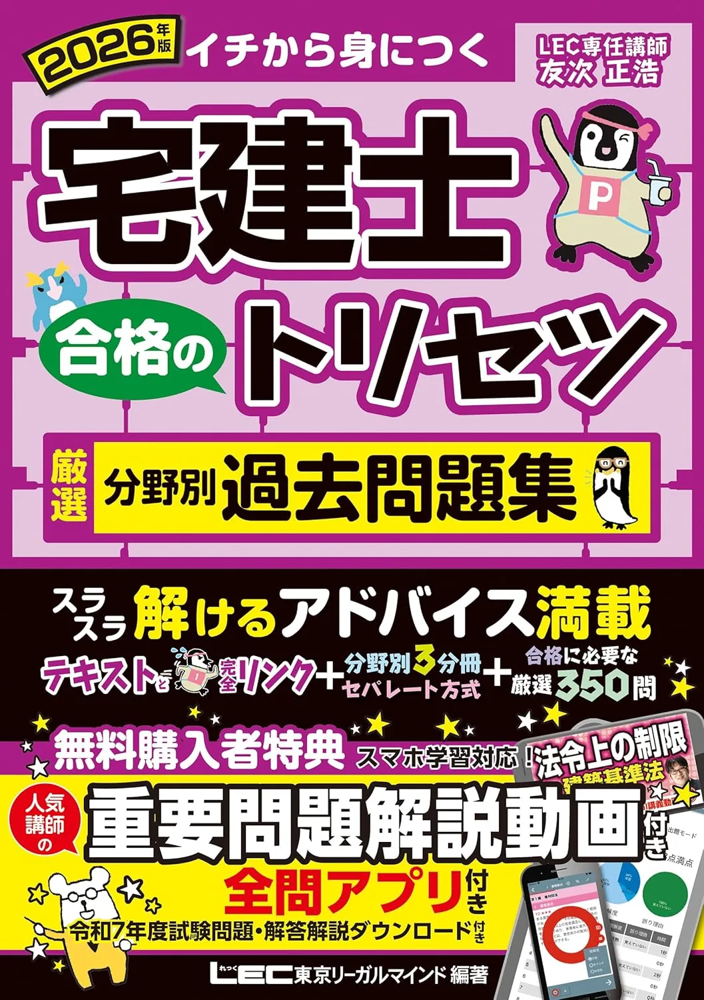
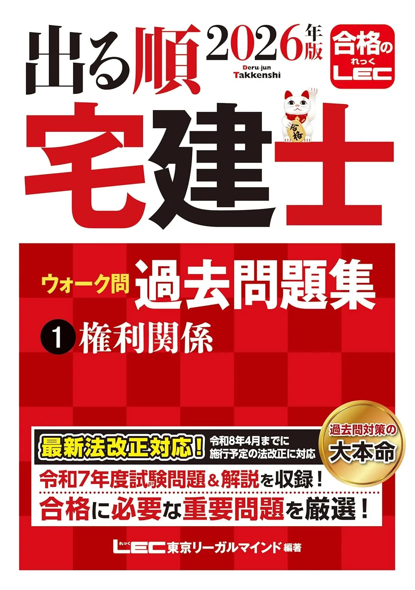

宅建士のおすすめ問題集3選【論点別・分野別過去問2026】
問題集3冊を、収録形式・解説量・手元テキストとの相性で比較します。価格・在庫は購入前に各Amazonページでご確認ください。
この記事の要点
本記事を読むと、問題集3冊の向き不向きが分かり、たとえば「8月末テキスト読了→論点別10問/週→9月から通し50問120分×2回」まで具体例付きで設計できます。
- 「2026年度版 みんなが欲しかった! 宅建士の論点別過去問題集」
- 「2026年版 宅建士 合格のトリセツ 厳選分野別過去問題集」
- 「2026年版 出る順宅建士 ウォーク問過去問題集」
- 18週逆算
- 50問120分
この記事の信頼性について
| 執筆 | 宅建マスター編集部（資格学習サイトの編集チーム） |
|---|---|
| 確認 | 公式情報確認担当（公開前に一次情報との照合を行う担当者） |
| 事実確認日 | 2026-06-11 |
| 主な参照元 |
18月まで：問題集選びの3基準
問題集選びは、テキスト読了後の9月通し演習を見据えて決めます。たとえば6月11日の週末にテキスト1冊を確定——8月末までに第1周、9月から50問120分の通しを週1回、という順序が定番です。
| 基準 | 内容 |
|---|---|
| 形式 | 本試験に近い50問120分の演習ができるか |
| 復習 | 4分野別に弱点を戻れるか |
| 接続 | 解説からテキスト該当章に戻れるか |
TAC完全攻略利用者は論点別過去問、LECトリセツ利用者は厳選分野別、出る順利用者はウォーク問——と同系統1冊に絞ると復習効率が上がります。解き方の型は過去問活用法のガイドで詳述しています。
おすすめ問題集3選（比較）
価格・在庫は執筆時点（2026-06-04）のAmazon税込参考です。購入前に販売ページで最新版を確認してください。
| 順位 | 商品名 | 価格（税込参考） | ページ数 | 向いている人 |
|---|---|---|---|---|
| 1 | 2026年度版 みんなが欲しかった! 宅建士の論点別過去問題集 | ¥2,750 | 680 | TAC教科書とセットで論点別演習をしたい人 |
| 2 | 2026年版 宅建士 合格のトリセツ 厳選分野別過去問題集 | ¥2,750 | 734 | LECトリセツ基本テキストとセットで過去問演習をしたい人 |
| 3 | 2026年版 出る順宅建士 ウォーク問過去問題集 | ¥1,980 | 342 | 出る順テキスト読了後にウォーク問形式で演習したい人 |
2026年度版 みんなが欲しかった! 宅建士の論点別過去問題集
- TAC教科書と章立ての相性がよい定番過去問
- 4分野を論点別に弱点演習しやすい
- 一問一答セレクト1000（別記事）との併用も向く

2026年版 宅建士 合格のトリセツ 厳選分野別過去問題集
- 合格のトリセツシリーズで解説付き過去問
- 分野別に演習量を確保しやすい
- 頻出一問一答（別記事）へのステップアップがしやすい

2026年版 出る順宅建士 ウォーク問過去問題集
- 出る順シリーズの過去問演習定番
- ウォーク問形式で解説を追いながら進めやすい
- 過去30年良問厳選模試（別記事）と併用しやすい
23冊の組み合わせ：テキスト別の1冊
手元テキストに合わせた組み合わせの目安です。例えば7月下旬にテキスト半分を読み終えた時点で問題集1冊を決め、8月は分野別10問/週から入る設計が現実的です。
| メインテキスト | おすすめ問題集 |
|---|---|
| TAC本試験完全攻略 | 論点別過去問題集 |
| LECトリセツ基本 | 厳選分野別過去問題集 |
| LEC出る順合格 | ウォーク問過去問題集 |
1冊に絞る場合は同出版社・同シリーズを優先し、購入前にAmazon販売ページの見本目次で弱点分野が項目別に並ぶか確認してください。テキスト未決定ならおすすめテキストの記事で先に1冊を選んでください。
31位 TAC論点別：弱点10問/週から
「2026年度版 みんなが欲しかった! 宅建士の論点別過去問題集」（TAC出版・B5判）は、論点別で弱点分野の演習に向く定番です。たとえば8月初旬に業法10問、中旬に権利10問——4分野を2週ずつ回すと9月の通し50問120分の準備が整います。
| 強み | 弱み・注意 |
|---|---|
| 論点別に弱点を集中的に回せる | 初受験はテキスト先行が安全 |
| TAC一問一答・本試験完全攻略と接続◎ | 他社テキストとの章ズレ |
| 本試験形式の演習量確保 | 価格はAmazonで要確認 |
当サイトの過去問演習で4分野別正答率を記録してから通し50問に入ると効率的です。購入前にAmazon販売ページで最新価格・在庫を確認してください。
42位・3位 LEC：分野別とウォーク問
「2026年版 宅建士 合格のトリセツ 厳選分野別過去問題集」（LEC・B5判）は、トリセツ基本テキストと縦串で復習しやすい構成です。例えば9月初旬に業法15問＋法令15問、中旬に権利15問＋税5問——という4分野ローテが組み立てやすいです。
| 問題集 | 向く人 |
|---|---|
| LEC厳選分野別 | トリセツ基本テキスト利用者 |
| 出る順ウォーク問 | 出る順テキストでコンパクト演習 |
出る順ウォーク問は8月末読了後のメイン演習向け。いずれも購入前にAmazon販売ページで価格・版を確認してください。
5過去問ループ：3日・7日後の解き直し
推奨ループの具体例です。たとえば9月中旬の土曜120分で通し50問を解き、月曜に誤答10問をテキスト該当章へ戻る——木曜・翌週月曜に3日後・7日後解き直し、というサイクルが定番です。
| 段階 | 作業 |
|---|---|
| 1 | 当サイト演習で4分野別正答率を記録 |
| 2 | 問題集で120分・50問の条件で通し |
| 3 | 誤答は用語解説→テキスト該当章→3日・7日後に解き直し |
| 4 | 新規追加より解き直し比率40％以上を維持 |
| 5 | 10月18日の4週前から新規過去問追加を抑制 |
本試験完全攻略→論点別過去問→当サイト演習の縦串が10月18日試験への逆算と相性がよいです。
6よくある質問
過去問だけで合格できますか？
論点別と分野別、どちらを先に買いますか？
問題集は何冊必要ですか？
記事の基本情報
| ジャンル | 過去問活用 |
|---|---|
| タグ | 独学 / 参考書 |
公式情報の確認
公式情報の確認：宅地建物取引士試験の最新情報は、不動産適正取引推進機構（RETIO）などの公式情報を必ず確認してください。本人に割り当てられた試験会場は受験票の表記が正本です。